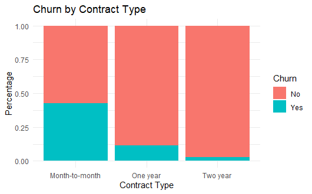
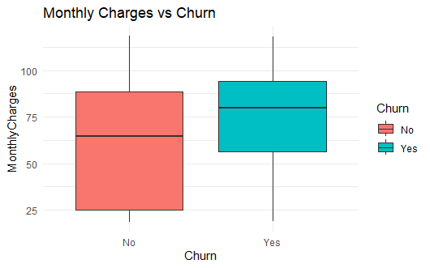
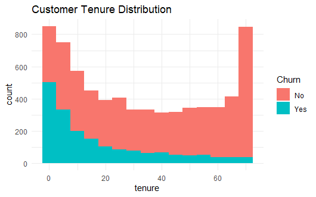
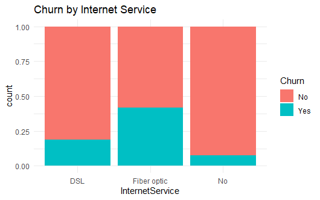

Ahmed Basheer
SQL | Python | Tableau | BigQuery | Google Sheets | R Studio | Data Visualization | Business Insights
SQL | Python | Tableau | BigQuery | Google Sheets | R Studio | Data Visualization | Business Insights
Aspiring Data Analyst passionate about transforming raw data into meaningful insights using SQL, Python, Tableau, Google Sheets, BigQuery, and R Studio. Focused on business intelligence, dashboard design, data analysis, and data-driven decisions.

Performed customer churn analysis using the IBM Telco Customer Churn dataset. Used R, ggplot2, and data visualization techniques to identify churn patterns, customer behavior trends, and retention opportunities.





Built an end-to-end warehouse analytics project using Python, SQL, Google BigQuery, and Tableau. Generated and analyzed a 1M-row warehouse fulfillment dataset to identify defect patterns, pick and pack station performance, shift-related issues, and operational improvement opportunities.